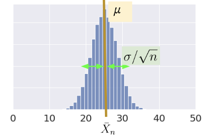
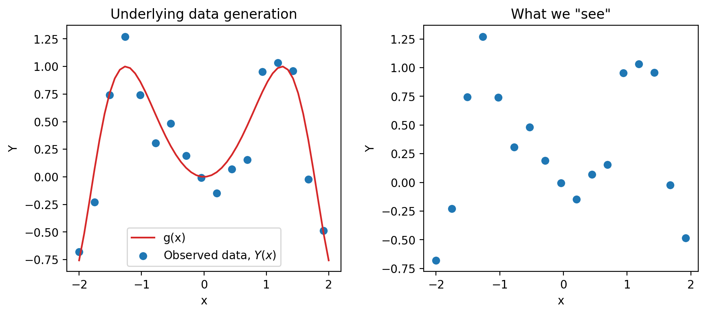
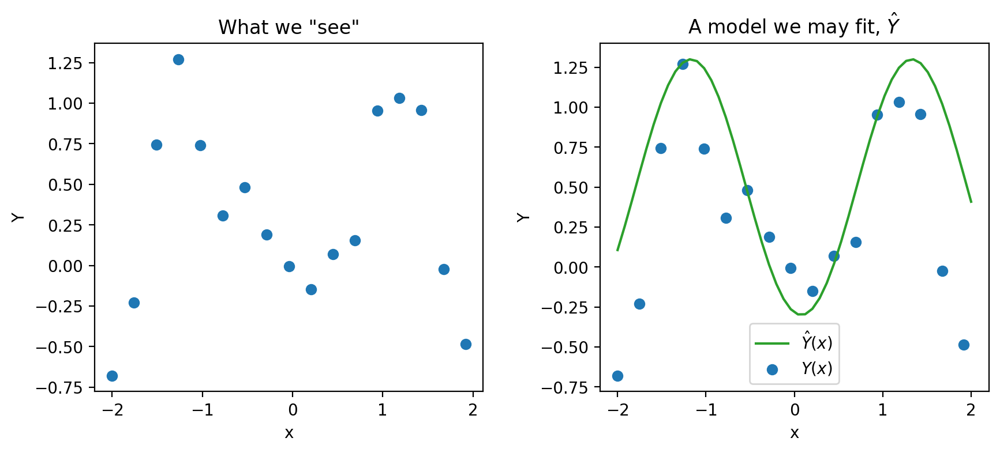

18 Estimators, Bias, and Variance
Last time, we introduced the idea of random variables: numerical functions of a sample. Most of our work in the last lecture was done to build a background in probability and statistics. Now that we’ve established some key ideas, we’re in a good place to apply what we’ve learned to our original goal – understanding how the randomness of a sample impacts the model design process.
In this lecture, we will delve more deeply into the idea of fitting a model to a sample. We’ll explore how to re-express our modeling process in terms of random variables and use this new understanding to steer model complexity.
18.1 Common Random Variables
There are several cases of random variables that appear often and have useful properties. Below are the ones we will explore further in this course. The numbers in parentheses are the parameters of a random variable, which are constants. Parameters define a random variable’s shape (i.e., distribution) and its values. For this lecture, we’ll focus more heavily on the bolded random variables and their special properties, but you should familiarize yourself with all the ones listed below:
- Bernoulli(p)
- Takes on value 1 with probability p, and 0 with probability 1 - p.
- AKA the “indicator” random variable.
- Let X be a Bernoulli(p) random variable
- \(\mathbb{E}[X] = 1 * p + 0 * (1-p) = p\)
- \(\mathbb{E}[X^2] = 1^2 * p + 0 * (1-p) = p\)
- \(\text{Var}(X) = \mathbb{E}[X^2] - (\mathbb{E}[X])^2 = p - p^2 = p(1-p)\)
- \(\mathbb{E}[X] = 1 * p + 0 * (1-p) = p\)
- Binomial(n, p)
- Number of 1s in \(n\) independent Bernoulli(p) trials.
- Let \(Y\) be a Binomial(n, p) random variable.
- The distribution of \(Y\) is given by the binomial formula, and we can write \(Y = \sum_{i=1}^n X_i\) where:
- \(X_i\) s the indicator of success on trial i. \(X_i = 1\) if trial i is a success, else 0.
- All \(X_i\) are i.i.d. and Bernoulli(p).
- \(\mathbb{E}[Y] = \sum_{i=1}^n \mathbb{E}[X_i] = np\)
- \(\text{Var}(X) = \sum_{i=1}^n \text{Var}(X_i) = np(1-p)\)
- \(X_i\)’s are independent, so \(\text{Cov}(X_i, X_j) = 0\) for all i, j.
- The distribution of \(Y\) is given by the binomial formula, and we can write \(Y = \sum_{i=1}^n X_i\) where:
- Uniform on a finite set of values
- Probability of each value is 1 / (number of possible values).
- For example, a standard/fair die.
- Uniform on the unit interval (0, 1)
- Density is flat at 1 on (0, 1) and 0 elsewhere.
- Normal(\(\mu, \sigma^2\))
- \(f(x) = \frac{1}{\sigma\sqrt{2\pi}} \exp\left( -\frac{1}{2}\left(\frac{x-\mu}{\sigma}\right)^{\!2}\,\right)\)
18.1.1 Example
Suppose you win cash based on the number of heads you get in a series of 20 coin flips. Let \(X_i = 1\) if the \(i\)-th coin is heads, 0 otherwise. Which payout strategy would you choose?
A. \(Y_A = 10 * X_1 + 10 * X_2\)
B. \(Y_B = \sum_{i=1}^{20} X_i\)
C. \(Y_C = 20 * X_1\)
18.2 Sample Statistics
Today, we’ve talked extensively about populations; if we know the distribution of a random variable, we can reliably compute expectation, variance, functions of the random variable, etc. Note that:
- The distribution of a population describes how a random variable behaves across all individuals of interest.
- The distribution of a sample describes how a random variable behaves in a specific sample from the population.
In Data Science, however, we often do not have access to the whole population, so we don’t know its distribution. As such, we need to collect a sample and use its distribution to estimate or infer properties of the population. In cases like these, we can take several samples of size \(n\) from the population (an easy way to do this is using df.sample(n, replace=True)), and compute the mean of each sample. When sampling, we make the (big) assumption that we sample uniformly at random with replacement from the population; each observation in our sample is a random variable drawn i.i.d from our population distribution. Remember that our sample mean is a random variable since it depends on our randomly drawn sample! On the other hand, our population mean is simply a number (a fixed value).
18.2.1 Sample Mean
Consider an i.i.d. sample \(X_1, X_2, ..., X_n\) drawn from a population with mean 𝜇 and SD 𝜎. We define the sample mean as \[\bar{X}_n = \frac{1}{n} \sum_{i=1}^n X_i\]
The expectation of the sample mean is given by: \[\begin{align} \mathbb{E}[\bar{X}_n] &= \frac{1}{n} \sum_{i=1}^n \mathbb{E}[X_i] \\ &= \frac{1}{n} (n \mu) \\ &= \mu \end{align}\]
The variance is given by: \[\begin{align} \text{Var}(\bar{X}_n) &= \frac{1}{n^2} \text{Var}( \sum_{i=1}^n X_i) \\ &= \frac{1}{n^2} \left( \sum_{i=1}^n \text{Var}(X_i) \right) \\ &= \frac{1}{n^2} (n \sigma^2) = \frac{\sigma^2}{n} \end{align}\]
\(\bar{X}_n\) is normally distributed by the Central Limit Theorem (CLT).
18.2.2 Central Limit Theorem
In Data 8 and in the previous lecture, you encountered the Central Limit Theorem (CLT). This is a powerful theorem for estimating the distribution of a population with mean \(\mu\) and standard deviation \(\sigma\) from a collection of smaller samples. The CLT tells us that if an i.i.d sample of size \(n\) is large, then the probability distribution of the sample mean is roughly normal with mean \(\mu\) and SD of \(\frac{\sigma}{\sqrt{n}}\). More generally, any theorem that provides the rough distribution of a statistic and doesn’t need the distribution of the population is valuable to data scientists! This is because we rarely know a lot about the population.

Importantly, the CLT assumes that each observation in our samples is drawn i.i.d from the distribution of the population. In addition, the CLT is accurate only when \(n\) is “large”, but what counts as a “large” sample size depends on the specific distribution. If a population is highly symmetric and unimodal, we could need as few as \(n=20\); if a population is very skewed, we need a larger \(n\). If in doubt, you can bootstrap the sample mean and see if the bootstrapped distribution is bell-shaped. Classes like Data 140 investigate this idea in great detail.
For a more in-depth demo, check out onlinestatbook.
18.2.3 Using the Sample Mean to Estimate the Population Mean
Now let’s say we want to use the sample mean to estimate the population mean, for example, the average height of Cal undergraduates. We can typically collect a single sample, which has just one average. However, what if we happened, by random chance, to draw a sample with a different mean or spread than that of the population? We might get a skewed view of how the population behaves (consider the extreme case where we happen to sample the exact same value \(n\) times!).

For example, notice the difference in variation between these two distributions that are different in sample size. The distribution with a bigger sample size (\(n=800\)) is tighter around the mean than the distribution with a smaller sample size (\(n=200\)). Try plugging in these values into the standard deviation equation for the normal distribution to make sense of this!
Applying the CLT allows us to make sense of all of this and resolve this issue. By drawing many samples, we can consider how the sample distribution varies across multiple subsets of the data. This allows us to approximate the properties of the population without the need to survey every single member.
Given this potential variance, it is also important that we consider the average value and spread of all possible sample means, and what this means for how big \(n\) should be. For every sample size, the expected value of the sample mean is the population mean: \[\mathbb{E}[\bar{X}_n] = \mu\]. We call the sample mean an unbiased estimator of the population mean and will explore this idea more in the next lecture.
18.3 Prediction and Inference
At this point in the course, we’ve spent a great deal of time working with models. When we first introduced the idea of modeling a few weeks ago, we did so in the context of prediction: using models to make accurate predictions about unseen data. Another reason we might build models is to better understand complex phenomena in the world around us. Inference is the task of using a model to infer the true underlying relationships between the feature and response variables. For example, if we are working with a set of housing data, prediction might ask: given the attributes of a house, how much is it worth? Inference might ask: how much does having a local park impact the value of a house?
A major goal of inference is to draw conclusions about the full population of data given only a random sample. To do this, we aim to estimate the value of a parameter, which is a numerical function of the population (for example, the population mean \(\mu\)). We use a collected sample to construct a statistic, which is a numerical function of the random sample (for example, the sample mean \(\bar{X}_n\)). It’s helpful to think “p” for “parameter” and “population,” and “s” for “sample” and “statistic.”
Since the sample represents a random subset of the population, any statistic we generate will likely deviate from the true population parameter, and it could have been different. We say that the sample statistic is an estimator of the true population parameter. Notationally, the population parameter is typically called \(\theta\), while its estimator is denoted by \(\hat{\theta}\).
To address our inference question, we aim to construct estimators that closely estimate the value of the population parameter. We evaluate how “good” an estimator is by answering three questions:
- Do we get the right answer for the parameter, on average?
- How variable is the answer?
- How close is our answer to the parameter?
18.3.1 Modeling as Estimation
Now that we’ve established the idea of an estimator, let’s see how we can apply this learning to the modeling process. To do so, we’ll take a moment to formalize our data collection and models in the language of random variables.
Say we are working with an input variable, \(x\), and a response variable, \(Y\). We assume that \(Y\) and \(x\) are linked by some relationship \(g\); in other words, \(Y = g(x)\). \(g\) represents some “universal truth” or “law of nature” that defines the underlying relationship between \(x\) and \(Y\). In the image below, \(g\) is denoted by the red line.
As data scientists, however, we have no way of directly “seeing” the underlying relationship \(g\). The best we can do is collect observed data out in the real world to try to understand this relationship. Unfortunately, the data collection process will always have some inherent error (think of the randomness you might encounter when taking measurements in a scientific experiment). We say that each observation comes with some random error or noise term, \(\epsilon\). This error is assumed to be a random variable with expectation \(\mathbb{E}(\epsilon)=0\), variance \(\text{Var}(\epsilon) = \sigma^2\), and be i.i.d. across each observation. The existence of this random noise means that our observations, \(Y(x)\), are random variables.

We can only observe our random sample of data, represented by the blue points above. From this sample, we want to estimate the true relationship \(g\). We do this by constructing the model \(\hat{Y}(x)\) to estimate \(g\).
\[\text{True relationship: } g(x)\]
\[\text{Observed relationship: }Y = g(x) + \epsilon\]
\[\text{Prediction: }\hat{Y}(x)\]

18.3.1.1 Estimating a Linear Relationship
If we assume that the true relationship \(g\) is linear, we can express the response as \(Y = f_{\theta}(x)\), where our true relationship is modeled by \[Y = g(x) + \epsilon\] \[ f_{\theta}(x) = Y = \theta_0 + \sum_{j=1}^p \theta_j x_j + \epsilon\]
This true relationship has true, unobservable parameters \(\theta\), and it has random noise \(\epsilon\), so we can never observe the true relationship. Instead, the next best thing we can do is obtain a sample \(\Bbb{X}\), \(\Bbb{Y}\) of \(n\) observed relationships, \((x, Y)\) and use it to train a model and obtain an estimate of \(\hat{\theta}\) \[\hat{Y}(x) = f_{\hat{\theta}}(x) = \hat{\theta_0} + \sum_{j=1}^p \hat{\theta_j} x_j\]
Now taking a look at our original equations, we can see that they both have differing sources of randomness. For our observed relationship, \(Y = g(x) + \epsilon\), \(\epsilon\) represents measurement errors and reflects randomness from the future. For the estimation model, the data we have is a random sample collected from the population, so the randomness from the past.
18.4 Bootstrap Resampling (Review)
To determine properties of the sampling distribution of an estimator like variance, we’d need to have access to the population so that we can consider all possible samples and compute an estimate for each sample.

However, we don’t have access to the population; we only have one random sample from the population. How can we consider all possible samples if we only have one?
The idea of bootstrapping is to treat our random sample as a “population” and resample from it with replacement. Intuitively, a random sample resembles the population, so a random resample also resamples a random sample.

Bootstrap resampling is a technique for estimating the sampling distribution of an estimator. To execute it, we can follow the pseudocode below:
collect a random sample of size n (called the bootstrap population)
initiate list of estimates
repeat 10,000 times:
resample with replacement n times from bootstrap population
apply estimator f to resample
store in list
list of estimates is the bootstrapped sampling distribution of fHow well does bootstrapping actually represent our population? The bootstrapped sampling distribution of an estimator does not exactly match the sampling distribution of that estimator, but it is often close. Similarly, the variance of the bootstrapped distribution is often close to the true variance of the estimator. The example below displays the results from different bootstraps from a known population using a sample size of \(n=50\).

In the real world, we don’t know the population distribution. The center of the boostrapped distribution is the estimator applied to our original sample, so we have no way of recovering the estimator’s true expected value. The quality of our bootstrapped distribution depends on the quality of our original sample; if our original sample was not representative of the population, bootstrap is next to useless.
One thing to note is that the bootstrap often does not work well for some statistics, like the median or other quantile-based statistics, that depend heavily on a small number of observations out of a larger sample. Bootstrapping does not overcome the weakness of small samples as a basis for inference. Indeed, for the very smallest samples, it may be better to make additional assumptions such as a parametric family.